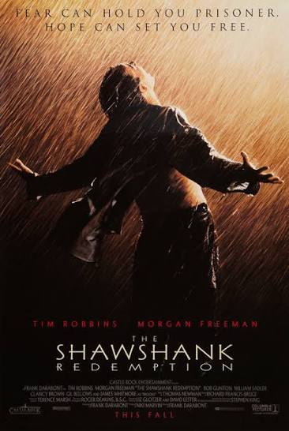

The Shawshank Redemption is a 1994 American prison drama film written and directed by Frank Darabont, based on the 1982 Stephen King novella Rita Hayworth and Shawshank Redemption. It stars Tim Robbins and Morgan Freeman and is widely regarded as one of the greatest films ever made. Despite a modest box office performance upon release, it has become a timeless classic and currently holds the #1 spot on IMDb's Top Rated Movies list with a rating of 9.3/10.

Image source: IMDb
In 1947, banker Andy Dufresne is convicted of murdering his wife and her lover, despite his claims of innocence, and is sentenced to two consecutive life terms at the harsh Shawshank State Penitentiary. Over the next two decades, Andy befriends fellow inmate Ellis Boyd "Red" Redding, a long-term prisoner known for smuggling contraband. Through quiet determination intelligence, and an unwavering sense of hope, Andy navigates the brutality and corruption of prison life—including the schemes of the hypocritical Warden Norton—while secretly planning his eventual escape.
The story is a powerful exploration of friendship resilience, and the human spirit's capacity for hope even in the darkest of places. It shows how one man's quiet integrity can inspire those around him and ultimately lead to freedom and redemption.
Tim Robbins as Andy Dufresne – A soft-spoken banker wrongfully imprisoned who maintains his dignity and hope throughout his long sentence.
Morgan Freeman as Ellis Boyd "Red" Redding – A seasoned inmate and the film's narrator, who becomes Andy's closest friend and confidant.
Bob Gunton as Warden Samuel Norton – The corrupt and hypocritical prison warden.
Clancy Brown as Captain Byron Hadley – The brutal head of the prison guards.
James Whitmore as Brooks Hatlen – An elderly long-term inmate who struggles with life outside prison.
William Sadler as Heywood – One of the inmates in Andy and Red's circle of friends.
Gil Bellows as Tommy Williams – A young inmate whose testimony becomes crucial to Andy's story.
The Shawshank Redemption received critical acclaim upon release and has only grown in stature over the years. It was nominated for seven Academy Awards including Best Picture, Best Actor (Morgan Freeman), Best Adapted Screenplay, and Best Cinematography. Although it did not win any Oscars that year (losing to Forrest Gump), its reputation has far surpassed many of its competitors.
Critics and audiences praise the film for its outstanding performances, especially the chemistry between Robbins and Freeman, Roger Deakins' beautiful cinematography, Thomas Newman's evocative score, and Darabont's faithful yet cinematic adaptation of Stephen King's story. Many describe it as one of the most uplifting and emotionally resonant movies ever made, with its central message—"Hope is a good thing, maybe the best of things, and no good thing ever dies"—resonating deeply with viewers around the world.
This is my favorite movie of all time. Every time I watch it, I am moved by Andy's quiet strength and the profound friendship he builds with Red. It reminds me that no matter how bleak the circumstances, hope and perseverance can lead to redemption. The final scenes are among the most satisfying and emotional in cinema history.